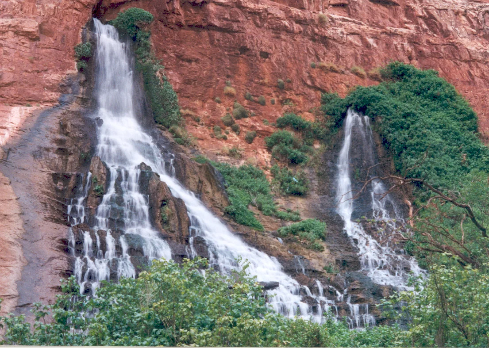

Springs are among the world's smallest freshwater ecosystems — and among its most important. They connect groundwater to the surface, sustain extraordinary biodiversity, support communities and cultures, and form the headwaters of rivers and wetlands around the world. Yet globally, we still don't know where most springs are, what condition they are in, or how best to protect them.
A global conservation gap
Springs are disappearing under pressure from groundwater extraction, climate change, pollution, development, and changing land use. At the same time, they remain inconsistently mapped, defined, assessed, and represented in conservation policy.
In 2025, the IUCN World Conservation Congress adopted Resolution 016, Springs under threat: mobilising urgent action for neglected freshwater systems, calling for coordinated global action to improve the recognition and conservation of springs.

Build the foundation for action
The IUCN Global Springs Task Force brings together expertise from across disciplines and regions to answer fundamental questions: What is a spring? Where are the world's springs? Which are most threatened? Which support irreplaceable biodiversity? And what standards and tools are needed to conserve them?
Define & Map
Build shared definitions, classifications, inventory standards, and a global picture of where springs occur.
Assess
Develop consistent approaches for evaluating ecological condition, biodiversity, hydrological integrity, and vulnerability.
Prioritize
Identify the springs, species, and regions where conservation attention is most urgently needed.
Guide
Connect springs to global conservation frameworks and develop practical guidance for their protection and stewardship.
From scattered knowledge to a shared global framework
Over its initial four-year program, the Task Force will build a global expert network, establish inventory and assessment standards, advance a global springs database, identify conservation priorities, and develop guidance that governments, scientists, conservation organizations, and communities can use around the world.